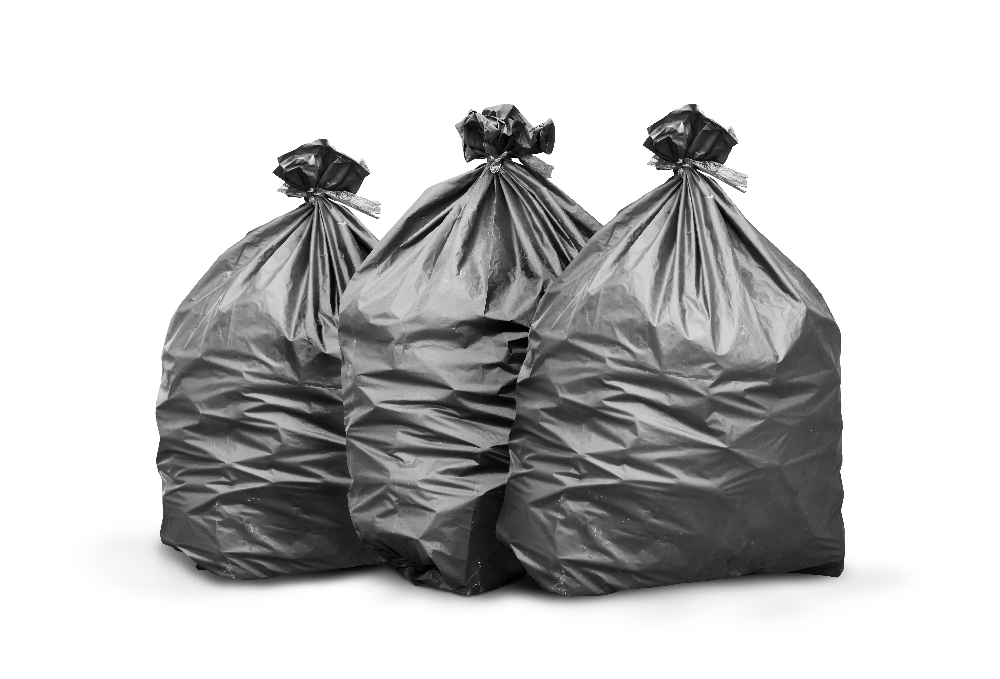

Lixo comum
Organize e coloque o lixo comum no dia e horário corretos da coleta. Essa atitude traz benefícios para a comunidade, para o meio ambiente e para a limpeza da cidade.
Horário da coleta
| Tipo de resíduo | Dias da coleta | Horário para colocar na rua |
|---|---|---|
| Lixo comum | Segunda e quinta-feira | Até as 18h |
Confira também os horários divulgados pela prefeitura do seu município, pois eles podem variar conforme a região.
Por que respeitar o horário?
- Evita o acúmulo de lixo nas ruas: quando o lixo fica muito tempo exposto, pode espalhar sujeira, mau cheiro e causar poluição visual.
- Reduz a presença de animais e insetos: sacos deixados antes do horário podem atrair cães, gatos, ratos, baratas e moscas.
- Previne problemas de saúde: o acúmulo de lixo favorece a proliferação de doenças transmitidas por insetos e roedores.
- Ajuda a manter a cidade limpa: a coleta no momento correto facilita o trabalho dos coletores.
- Evita entupimento de bueiros: o lixo espalhado pode ser levado pela chuva para galerias pluviais e causar alagamentos.
- Demonstra cidadania e respeito: cada morador contribui para um ambiente mais limpo, seguro e saudável.